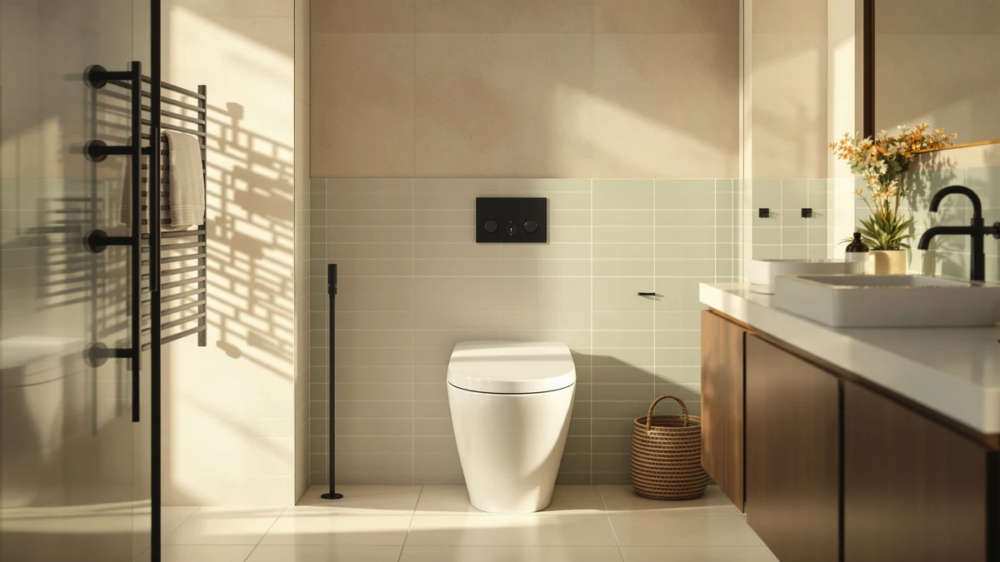

Best One Piece Movie (2026)
Prices and picks verified as of August 2026. Independent, reader-supported reviews.


Quick Answer
For most bathrooms, the Casta Diva One Piece Toilet is the one piece toilet to buy: it pairs a 17.5-inch ADA comfort-height bowl with a powerful MAP 1000g siphon flush and dual-flush water savings at a fair $221.84. Measure your rough-in first, it is 12 inches on the vast majority of US homes.
Our pick: Casta Diva One Piece Toilet — $221.84 Check Price on Amazon
Bottom line: our top pick is the Casta Diva One Piece Toilet Elongated with 17.5" ADA Height at $289.99. The best budget option is the Sonderzone Elongated One Piece Toilet for Bathroom at $180.99.
Things to Know Before You Buy
- Comfort height means an easier sit and stand: most of these bowls sit around 17 to 17.5 inches off the floor, the ADA-recommended range, instead of the roughly 15 inches on a standard toilet. That extra height helps taller users, seniors and anyone with knee or back issues.
- One-piece means fewer places for grime to hide: the tank and bowl are molded as a single unit, so there is no tank-to-bowl seam to scrub. The trade-off is weight, most of these run 80 to 100-plus pounds, so plan on a second set of hands for installation.
- Confirm your rough-in before you buy: that is the distance from the finished wall to the center of the drain bolts, and every toilet on this list is built for the standard US 12-inch rough-in. Measure first, a 10- or 14-inch rough-in needs a different model.
- Check whether the seat is included: the Sonderzone and AKNIRL picks ship with a soft-close seat in the box, while the others do not. If yours does not include one, budget another $30 to $50.
- Dual-flush saves water without losing power: most of these use a dual-flush system (around 1.0 to 1.6 GPF) paired with a MAP rating of 1000 grams, enough to clear solid waste in one flush while cutting water use on light flushes.
- Compact and elongated are not the same trade-off: the HOROW pick trims a few inches for tight bathrooms, while most of the rest use a full elongated bowl for maximum sit comfort. Measure your space before assuming elongated will fit.
A one piece toilet fuses the tank and bowl into a single seamless unit, which means no tank-to-bowl seam to catch grime and a cleaner look in a small bathroom. It is also the format most comfort-height and ADA-compliant models are built around today, since the sealed body pairs naturally with a taller bowl that is easier to sit down onto and stand up from.
The catch is that these toilets range widely in price and feature set. Some ship with a soft-close seat already included, others make you buy one separately. Flush systems range from a basic dual-flush gravity design to an air-pressure-assisted foot-kick flush, and every one of them assumes a standard 12-inch rough-in that you should confirm before ordering.
We compared seven one piece toilets worth considering and narrowed the list to a mix of budgets and priorities, from a $191.99 AKNIRL budget pick to a $259 HOROW built for small bathrooms. Each pick below has a clear job, and we call out the honest drawbacks so nothing surprises you after a heavy box lands on your porch.
Why You Should Trust Us
This guide is written and maintained by Ilane Tall, who runs a network of bathroom-focused review sites and spends more time than is reasonable comparing fixtures on the specs that actually predict satisfaction rather than marketing copy. We do not run a fake testing lab and we did not install seven toilets in a warehouse. What we do is read every spec sheet, cross-check bowl height, rough-in and flush volume against listing photos and hundreds of owner reviews, flag the complaints that keep coming up, and refuse to recommend anything we would not install in our own home. Our Amazon commissions never change a ranking.
How We Picked
We started with one piece toilets that are in stock and shipping in the US, then filtered on the details that make or break daily use: a comfort or ADA-height bowl, a dual-flush system with a MAP rating strong enough to clear waste in one flush, a standard 12-inch rough-in, and a seamless body that is easy to wipe down. We gave extra weight to models that include a soft-close seat in the box, since that quietly saves $30 to $50 and a second shopping trip. We set aside anything with a pattern of leaks, cracked-on-arrival reports or weak-flush complaints, and made sure the final seven span a real range of budgets and bathroom sizes.
How We Compared
Since we do not stage a warehouse full of installed toilets, our evaluation is a documentation and owner-experience review rather than a hands-on lab test, and we would rather say that plainly than fake a testing rig. For each model we mapped the published dimensions, seat height and rough-in against what buyers report in photos and long-term reviews, watched for failure patterns that show up after a few months, such as running fills, weak siphons or seat hinges that loosen, and weighed how the flush technology and included accessories hold up against the price. Where a listing claimed a feature we could not corroborate in owner feedback, we treated it skeptically.
Our Picks

Casta Diva One Piece Toilet
What we like
- 17.5-inch ADA comfort height makes sitting and standing noticeably easier
- MAP 1000g siphon jet flush clears waste in one go, with a fully glazed wide trapway that resists clogs
- Dual-flush (1.0/1.28 GPF) cuts water use on light flushes without losing power
- Seamless one-piece body has no tank-to-bowl seam to scrub
Flaws but not dealbreakers
- Seat is not included, so budget another $30 to $50
- Silver flush button is a distinctive look that will not match every bathroom's hardware
| Material | — |
| Size | — |
The Casta Diva One Piece Toilet is our pick because it does not force a trade-off: you get the 17.5-inch ADA comfort height, a genuinely strong MAP 1000g siphon flush, and dual-flush water savings, all in a seamless skirted body, for a price that undercuts several toilets on this list with fewer features.
It ships on a standard 12-inch rough-in and installs like any other one-piece toilet, though at this size a second set of hands makes the lift onto the flange much easier. The one thing to budget for is the seat, since it is sold separately here.

HOROW T0338W Compact One Piece
What we like
- Compact 26.6"D x 15"W footprint fits tighter bathrooms than most elongated one-piece toilets
- 17.3-inch ADA chair height keeps sitting and standing comfortable despite the smaller size
- Siphon flush with a fully glazed 2-inch trapway resists clogs
- Seamless one-piece body is easy to wipe down around the exterior
Flaws but not dealbreakers
- Priced higher than several larger toilets on this list, you are paying for the compact engineering
- Seat is sold separately
| Material | — |
| Size | 12" Rough-in |
Most one piece toilets assume you have room for a full elongated bowl. The HOROW T0338W does not, it is built at a compact 26.6 by 15 inches so it fits bathrooms where a standard elongated model would crowd the door swing or a vanity, without giving up the 17.3-inch comfort height that makes sitting and standing easier.
The dual-flush 1.1/1.6 GPF system and siphon jet keep flush performance in line with the larger toilets here. It is the most expensive pick on this list, which reflects the tighter engineering that compact one-piece models require, but if your bathroom is small it solves a problem the other six cannot.

Casta Diva Elongated One Piece
What we like
- Fully skirted, seamless design with no tank-to-bowl seam or exposed trapway to trap grime
- 17-inch ADA comfort chair height for easier sitting and standing
- MAP 1000g siphon flush delivers a quiet, powerful, one-flush clean
- Dual-flush 1.1/1.6 GPF meets EPA WaterSense criteria for water savings
Flaws but not dealbreakers
- Seat sold separately
- Standard white finish only, no color or button options
| Material | — |
| Size | — |
The skirted, seamless body is the reason to pick this Casta Diva model over a standard two-piece design, there is no exposed trapway or tank seam to catch dust and grime, so wiping it down is genuinely a single pass rather than a chore around fittings.
At 17 inches, the comfort height is slightly shorter than our top pick but still in ADA territory, and the MAP 1000g siphon flush and dual-flush system perform in line with the rest of this lineup. It is a straightforward, no-frills choice for buyers who mainly want easy cleaning at a fair price.

Sonderzone Elongated One Piece Toilet
What we like
- Soft-close seat included in the box, no separate purchase needed
- 17.3-inch ADA comfort height for easier sitting and standing
- MAP 1000g dual-flush (1.1/1.6 GPF) system clears waste reliably while saving water
- One of the lowest prices on this list once you account for the included seat
Flaws but not dealbreakers
- Sonderzone is a newer, less established brand than Casta Diva or HOROW
- Standard rather than skirted body, so the trapway is more exposed than our skirted picks
| Material | — |
| Size | — |
Factor in that most one-piece toilets sell the seat separately, and the Sonderzone's $199.99 price looks even better, it is one of the few picks here that includes a soft-close seat in the box, which normally adds $30 to $50 to the toilets that do not.
The 17.3-inch comfort height and MAP 1000g dual-flush system put it on par with pricier competitors on this list for everyday performance. The brand has a shorter track record than the established names here, but the spec sheet and included seat make it the easiest value pick if your rough-in is the standard 12 inches.

Casta Diva Elongated One Piece
What we like
- Air-pressure-assisted flush works reliably even in low water-pressure environments
- Hands-free foot-kick or side-button flush is more hygienic than a hand-touched handle
- No electricity required despite the assisted-flush technology
- 17.2-inch ADA comfort height for easier sitting and standing
Flaws but not dealbreakers
- At $249.99 it is one of the pricier picks on this list
- The foot-kick mechanism is a different motion than buyers used to a standard handle or button may expect at first
| Material | — |
| Size | — |
This Casta Diva model solves a problem the rest of the list does not: weak water pressure. Its air-pressure-assisted 1.0 GPF flush uses a built-in tank system rather than relying purely on gravity, so it keeps flush power consistent in older homes or upper floors where water pressure sags.
The foot-kick or side-button activation is also a genuine hygiene upgrade for shared or high-traffic bathrooms, since nobody has to touch a handle. It costs more than most of the picks here, but for the right household, low-pressure home or hands-free preference, that premium is easy to justify.

Casta Diva Elongated One Piece
What we like
- Golden flush button adds a distinctive design accent most white toilets do not offer
- Compact 25.39 x 14.56-inch footprint helps it fit tighter bathrooms
- 17.5-inch ADA comfort height with dual-flush (1.0/1.28 GPF) water savings
- Seamless skirted body with no tank-to-bowl seam to scrub
Flaws but not dealbreakers
- The golden button will not suit every bathroom's existing hardware finish
- Seat sold separately
| Material | — |
| Size | — |
Most one-piece toilets are designed to disappear into the bathroom. This Casta Diva variant does the opposite on purpose, its golden flush button is a small but noticeable design statement, paired with the same skirted, seamless body and 17.5-inch comfort height as our top pick.
The compact 25.39 by 14.56-inch dimensions also help it fit bathrooms that cannot take a full-size elongated toilet. If you want a one-piece toilet with a bit more personality than plain white and chrome, this is the pick, just confirm the golden accent matches your existing fixtures first.

AKNIRL Elongated One Piece Toilet
What we like
- Lowest price on this list, at $191.99
- Soft-close seat included in the box, no separate purchase needed
- 17.3-inch ADA comfort height for easier sitting and standing
- MAP 1000g dual-flush (1.0/1.6 GPF) system keeps flush performance close to pricier picks
Flaws but not dealbreakers
- AKNIRL is a lesser-known brand with less long-term track record than Casta Diva or HOROW
- Standard rather than skirted body, so it takes a bit more care to keep the exterior spotless
| Material | — |
| Size | — |
At $191.99 with a soft-close seat already in the box, the AKNIRL is the easiest way to get a comfort-height one piece toilet without paying for a name brand or a separate seat purchase, and the spec sheet, 17.3-inch ADA height and MAP 1000g dual-flush, holds up against toilets costing $50 or more.
The trade-off is brand recognition rather than a functional shortfall in the spec sheet: AKNIRL has a shorter history than Casta Diva or HOROW, so parts support down the line is less certain. For a primary or guest bathroom on a budget, it is a smart pick.
Quick Comparison
| Product | Material | Price | Rating | Best for | Get it |
|---|---|---|---|---|---|
| Casta Diva One Piece Toilet | — | $221.84 | 4 | Best overall | View on Amazon → |
| HOROW T0338W Compact One Piece | — | $259.00 | 4 | Best for small bathrooms | View on Amazon → |
| Casta Diva Elongated One Piece | — | $225.70 | 4 | Easiest to keep clean | View on Amazon → |
| Sonderzone Elongated One Piece Toilet | — | $199.99 | 4 | Best value with seat included | View on Amazon → |
| Casta Diva Elongated One Piece | — | $249.99 | 4 | Best hands-free flush | View on Amazon → |
| Casta Diva Elongated One Piece | — | $239.98 | 4 | Best designer accent | View on Amazon → |
| AKNIRL Elongated One Piece Toilet | — | $191.99 | 4 | Best budget pick | View on Amazon → |
The Competition
A number of one piece toilets did not make this list, usually for a predictable reason. Several ultra-cheap listings undercut our AKNIRL budget pick on price but do it by shipping without a seat, relying on a weak gravity flush, or racking up cracked-on-arrival complaints, and a toilet that leaks or arrives broken is no bargain.
At the high end, we passed on several smart-toilet and bidet-seat combos. They are impressive, but they cost multiples of everything here, add electrical requirements, and answer a different question than what the best straightforward one piece toilet is. If you want a heated seat and a washlet, that deserves its own guide.
We also set aside a handful of well-known brand models that are perfectly good but did not beat our picks on value, either the same features cost noticeably more, or the seat was sold separately with no offsetting advantage. When a familiar logo costs extra without doing more, we would rather point you to the toilet that gives you comfort height, flush power and easy cleaning for less.
Frequently Asked Questions
What is the standard rough-in for a one piece toilet?
The overwhelming majority of one piece toilets, including every model on this list, are built for the standard US 12-inch rough-in, the distance from the finished back wall to the center of the drain bolts. Measure from the wall, not the baseboard, and confirm it before you order, since a 10- or 14-inch rough-in needs a different toilet.
Does a one piece toilet include the seat?
Sometimes. The Sonderzone and AKNIRL picks on this list include a soft-close seat in the box, while the Casta Diva and HOROW models sell the seat separately. Always check the listing, and if the seat is not included, budget another $30 to $50 for a matching elongated soft-close seat.
Why are one piece toilets so heavy, and can I install one myself?
Because the tank and bowl are molded as a single piece of porcelain, one piece toilets typically weigh 80 to 100-plus pounds, more than a two-piece toilet where the tank and bowl install separately. The install itself is not complicated, but lifting and seating the unit onto the wax ring is genuinely a two-person job.